Notes from
the Studio
Stories about AI, creativity, and building something real. Take what helps.

My Workshop Did Not Go as Planned
It went even better. A look back at my headless software workshop, and the recording if you missed it.
Read the post
Software Is Losing Its Head
What headless software is, in plain English, and why it’s good news for busy business owners.
Read the postAI tools and real stories
What Goes Into a Good Claude Skill (And Why More Isn’t Better)
It’s not just a skill. It’s a set of very important instructions.
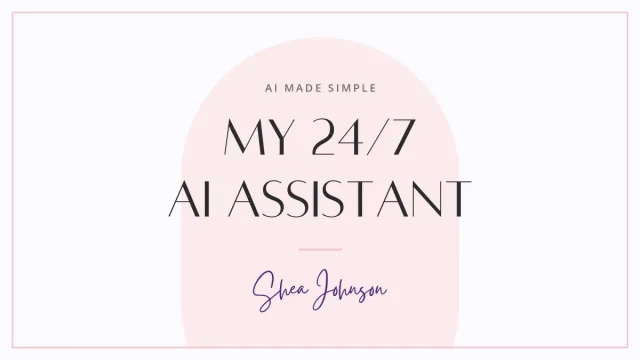
AI made simple · 8 min readI Built a 24/7 AI Assistant That Runs My Business While I Sleep
Here’s exactly how it happened
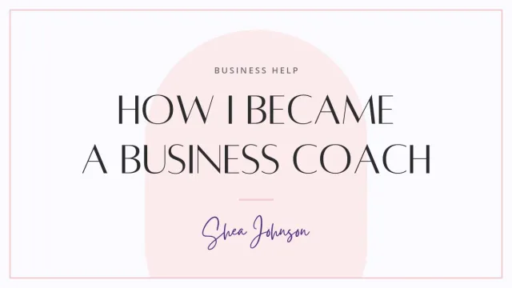
Business help · 5 min readHow I Accidentally Became a Small Business Coach (and Found My Way to AI)
The backstory on my journey through burnout, government contracting, and finally finding my lane
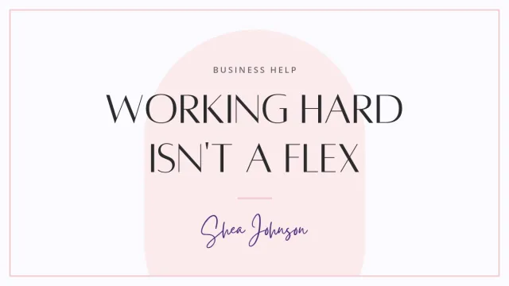
Business help · 2 min readWorking Hard Isn’t a Flex If You’re Falling Apart Behind the Scenes
What I learned when self-care finally caught up with me
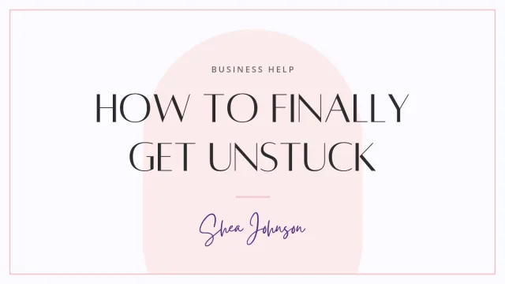
Business help · 8 min readHow to Finally Get “Unstuck” and Start That Business
No matter where you are in the process
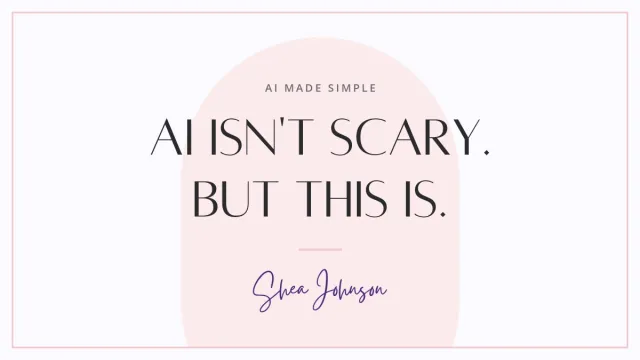
AI made simple · 1 min readAI Isn’t Scary — But This Is
A letter to busy business owners
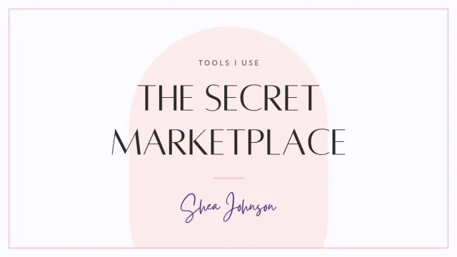
Tools I use · 2 min readThe Secret Software Marketplace That’s Saving Me Thousands
— my go-to spot for lifetime deals
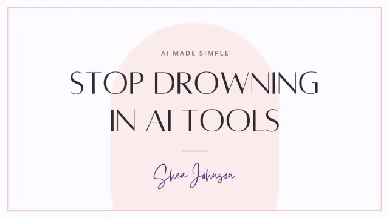
AI made simple · 2 min readStop Drowning in AI Tools — These 3 Are All You Actually Need
After 2 years and dozens of tools, here’s where I’d start if I began today
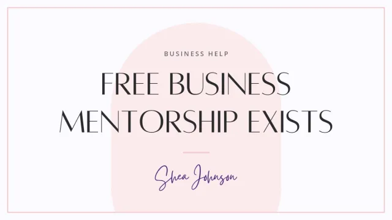
Business help · 3 min readFree 1-on-1 Business Mentorship EXISTS!!!
You just have to know where to find it and how to navigate it!
Show all posts
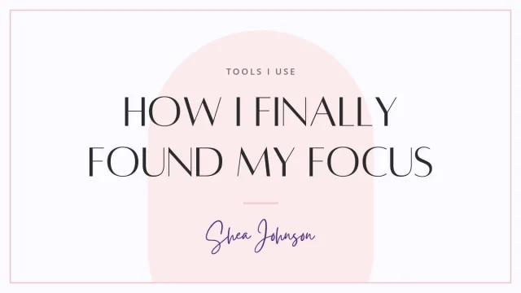
Tools I use · 2 min readHow I Finally Conquered My Struggle with Focus (and the Surprising Tool That Helped)
I never expected an accountability buddy could change so much. Now I can’t imagine working without it.
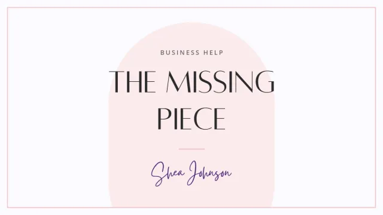
Business help · 3 min readIs Internal Work the Missing Piece in Your Business Success?
The five areas I tackled to finally break through — and how this workbook can help you do the same.
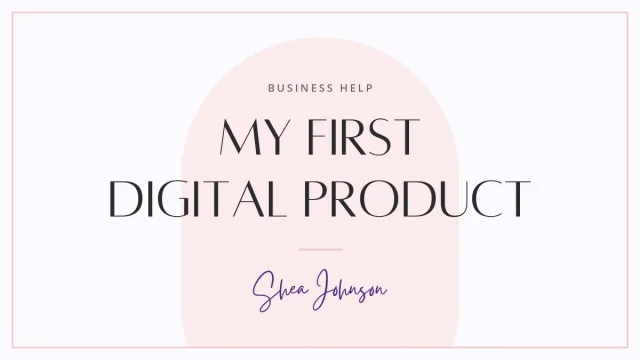
Business help · 1 min readThe First Digital Product I Created for my Business Owners
The story behind it and why it means so much to me
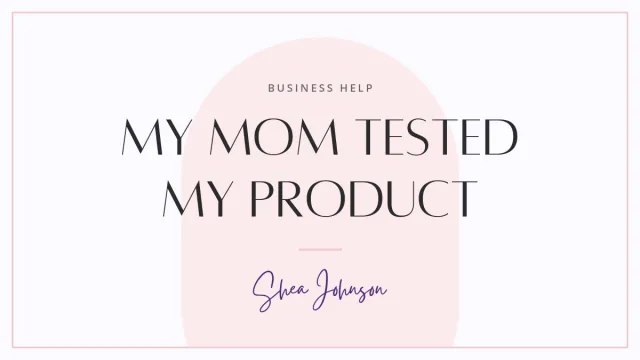
Business help · 3 min readMy Mom Tested My Product… and Broke It (In the Best Way)
How two honest testers changed the Powerhouse Entrepreneur Series
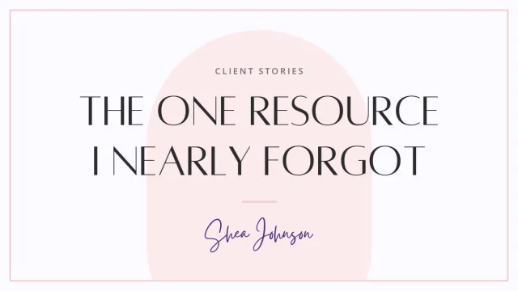
Client stories · 1 min readThe One Resource I nearly Forgot (and why my clients love it)
But don’t just take my word for it — hear directly from someone who’s lived it.
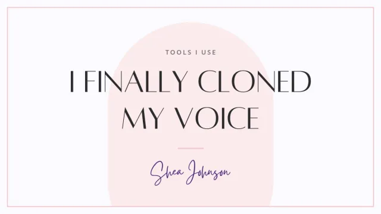
Tools I use · 2 min readI Finally Cloned My Voice Using AI — Here’s What Happened
My experience with ElevenLabs and what I learned along the way
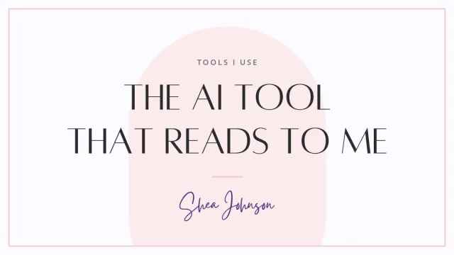
Tools I use · 2 min readThe AI Tool That Helps Me “Listen” To Large Documents
How I finally got back into studying without struggling to focus
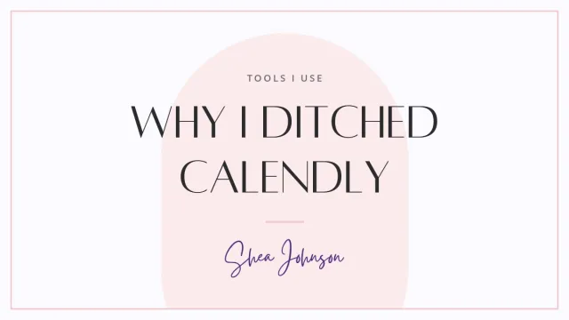
Tools I use · 2 min readThe Calendar Booking Tool That Made Me Ditch Calendly (and It’s Free)
How I found the perfect scheduling software for Apple users — without the monthly fees
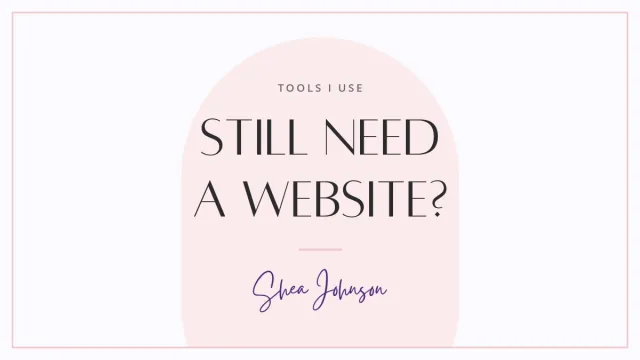
Tools I use · 6 min readStill Need a Website? Read This First.
What I wish I knew before spending years and money figuring it out
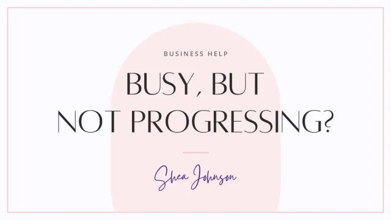
Business help · 5 min readBusy But Not Making Progress? Try This.
How I stopped confusing productivity with actually growing
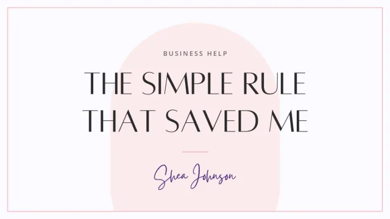
Business help · 2 min readThe Simple Rule That Saved Me When I Couldn’t Get Anything Done
How “one thing a day” helped me make progress — even on my lowest days
Business help · 3 min readHow a Simple Test Revealed My Hidden Leadership Strengths
Discover how this powerful assessment helped me grow — and why it might do the same for you.
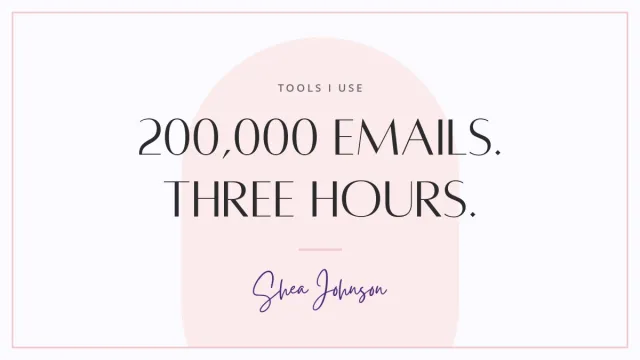
Tools I use · 5 min readHow I Cleaned Up 200,000 Emails in 3 Hours
And Finally Hit Inbox Zero
The Powerhouse Entrepreneur Series
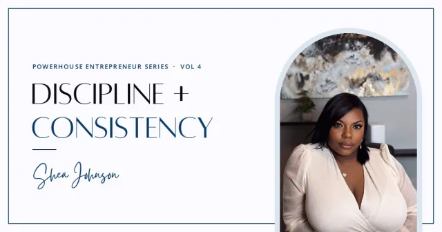
Powerhouse Series · 2 min readThe Missing Link Wasn’t Motivation
I was crushing my goals. Then my streaks started getting shorter.
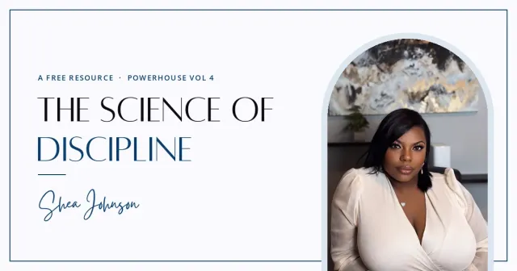
Powerhouse Series · 12 min readThe Science of Discipline
What’s Really Happening in Your Brain (And How to Work With It, Not Against It)
Powerhouse Series · 2 min readWhen Does Becoming Who You’re Meant to Be Become Urgent?
What if you woke up and decided to be exactly who you want to be, unapologetically?
Powerhouse Series · 1 min readI Won’t Tell You What I Found on My Spiritual Journey
My answers aren’t meant to be yours. So I built a path to help you find your own.
Powerhouse Series · 1 min readI Was Busy. I Just Wasn’t Busy Crushing Goals.
The coaching journey that turned my busy into done.
 Powerhouse Series · 1 min read
Powerhouse Series · 1 min read
An Update on the Powerhouse Entrepreneur Series
What’s changing with the series, and what I’m building next.
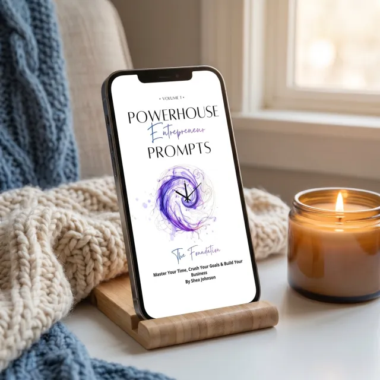
Powerhouse Series · 5 min readThe Powerhouse Entrepreneur Series — Start Here
The Philosophy, the Privacy, and Everything You Need to Know Before Your Journey Begins